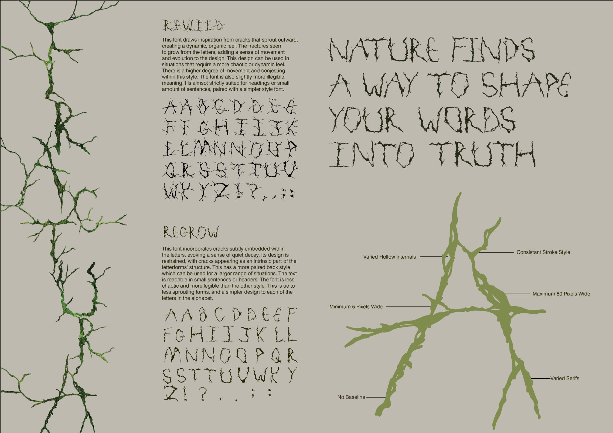
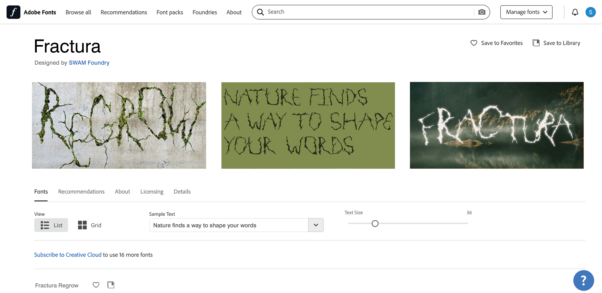
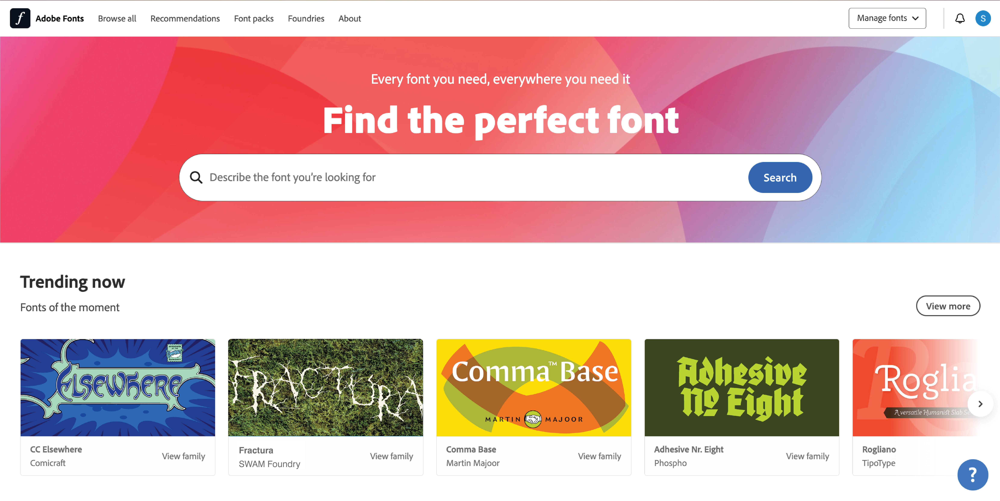
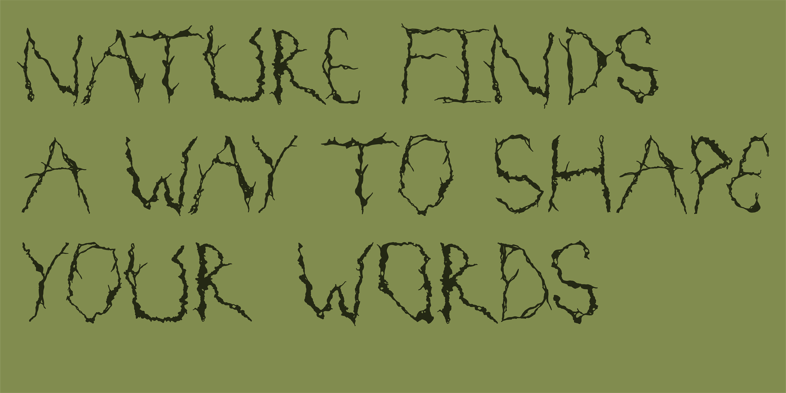
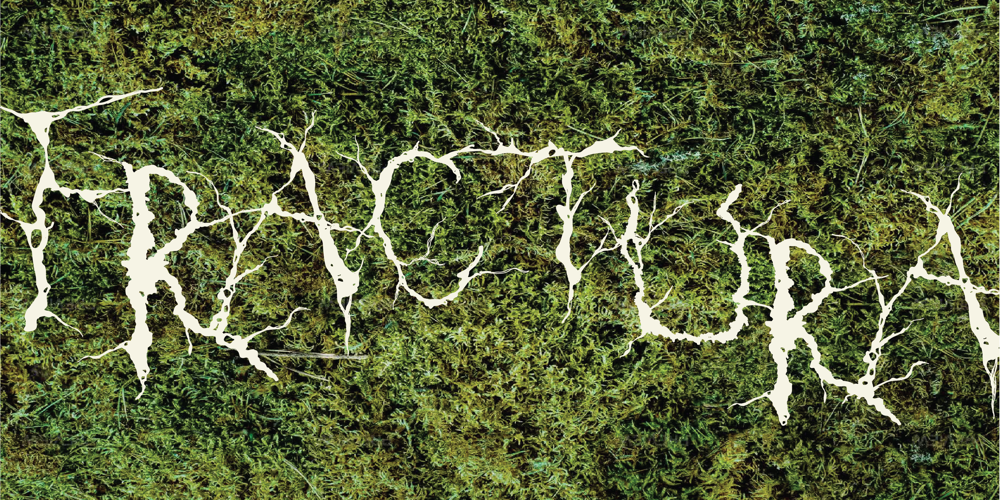
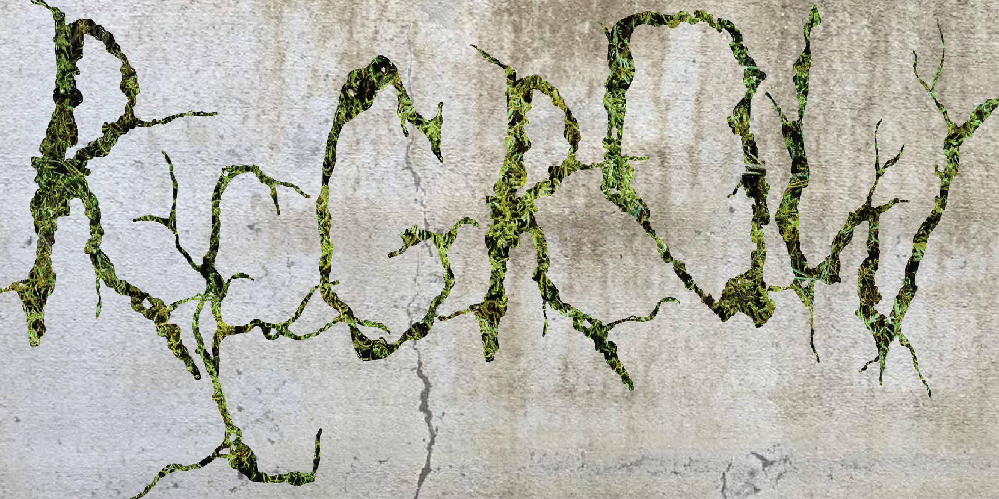
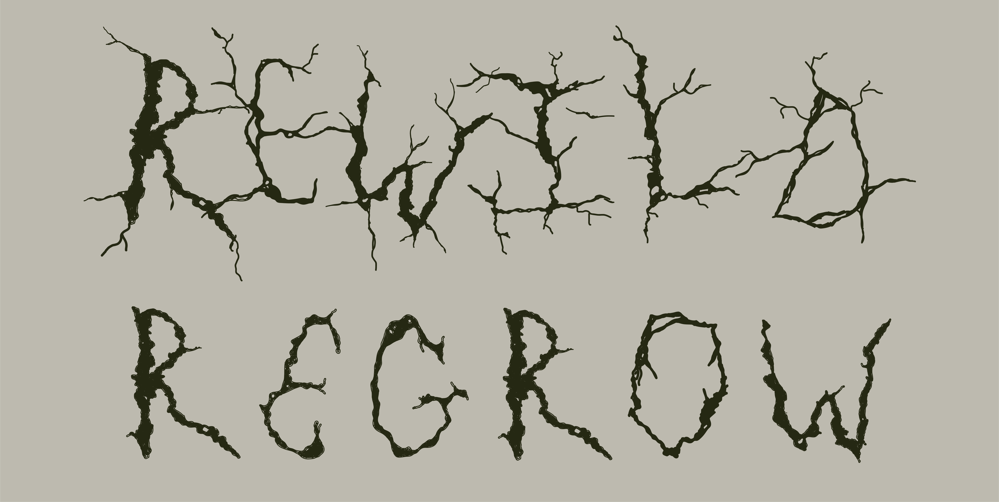

DIGITAL / 02
Typography Design: Fractura
- WORK
- Experimental display typeface design
- YEAR
- 2025
- MEDIUM
- Hand-drawn and digital letterforms · Graphic design · Type specimen
- CONTEXT
- ANU DESN2009 · University group project

Overview
Fractura is an experimental display typeface inspired by the geometry of cracks, fractured surfaces and the irregular patterns of decay. The project translates those found forms into expressive letterforms intended primarily for headings and distinctive graphic applications.
Working with Molly, Stella and Anna, I contributed across the project, with my primary focus on researching visual inspiration, developing the lettering system and designing the type sampler.
Design Brief
Develop a typeface based on found visual forms, then explore its identity through letterforms, a type specimen and applications such as promotional graphics. The brief valued experimentation, typographic consistency and a clear response to the original reference material.
The typeface was intended as a display design rather than a conventional body-text font. It needed to be visually distinctive and communicative at large sizes.


Process
I collected visual precedents from cracks and damaged surfaces, then developed the shapes into a recognisable letterform system. The project explored irregular strokes, branching details, varying internal spaces and a fractured visual language without losing the feel of a coherent typeface.
Two connected styles emerged: Rewild, with more chaotic, outward-branching features, and Regrow, a calmer and more legible variation with restrained cracks embedded in the lettering. I designed the type specimen to explain the styles, show the characters and communicate their intended uses.
The group developed supporting presentation materials, including renders and mockups of how the typeface could appear in context. Those application mockups were mainly created by other group members.




Outcome
The group completed two visual styles of Fractura, a type sampler and a series of graphic applications that demonstrated how the lettering could communicate ideas of fragmentation and regrowth.
Fractura was designed as graphical letterforms rather than released as a working installable font file. The project demonstrates typographic experimentation and how hand-drawn forms can develop into an identifiable display identity.